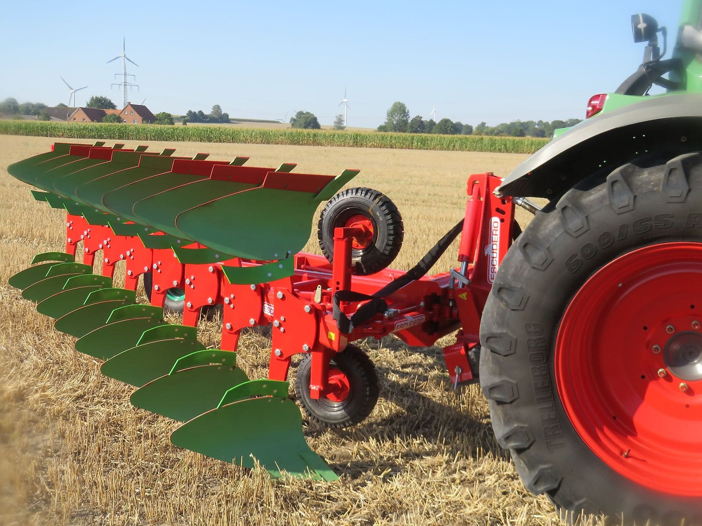

Schälpflüge
ESCUDERO Ecologic Onland Schälpflüge
In Deutschland exklusiv über agroXX erhältlich
Die ESCUDERO Ecologic Onland Dreh-Schälpflüge pflügen in der Furche und schonen so den Boden. Erhältlich mit 6 bis 10 Scharen, mit Steinsicherung und zum Teil hydropneumatisch abgesichert.
- 6–10Schare
- 37 cmFurchenbreite
- 65 cmKörperabstand
Ausstattung
- Rahmen
- 70 cm Rahmenhöhe, 65 cm Körperabstand
- Sicherung
- Steinsicherung, beim CHRH hydropneumatisch
- Einsatz
- Onland-Pflügen für größere Schlepper und Flächen


In Deutschland exklusiv über agroXX.
Weitere Videos
Diese Links führen zu YouTube. Erst beim Anklicken werden Daten an YouTube übertragen.
Baugrößen und Ausführungen
CHRF
Ecologic Onland Dreh-Schälpflug in 6 bis 10 Scharen.
| Modell | Ausführung | Eckdaten |
|---|---|---|
| ESCUDERO CHRF 6 Schar | Ecologic Onland Dreh-Schälpflug | Arbeitsbreite 2,22 m · Furchenbreite 37 cm · Körperabstand 65 cm · Rahmenhöhe 70 cm · Steinsicherung |
| ESCUDERO CHRF 7 Schar | Ecologic Onland Dreh-Schälpflug | Arbeitsbreite 2,59 m · Furchenbreite 37 cm · Körperabstand 65 cm · Rahmenhöhe 70 cm · Steinsicherung |
| ESCUDERO CHRF 8 Schar | Ecologic Onland Dreh-Schälpflug | Arbeitsbreite 2,96 m · Furchenbreite 37 cm · Körperabstand 65 cm · Rahmenhöhe 70 cm · Steinsicherung |
| ESCUDERO CHRF 9 Schar | Ecologic Onland Dreh-Schälpflug | Arbeitsbreite 3,33 m · Furchenbreite 37 cm · Körperabstand 65 cm · Rahmenhöhe 70 cm · Steinsicherung |
| ESCUDERO CHRF 10 Schar | Ecologic Onland Dreh-Schälpflug | Arbeitsbreite 3,70 m · Furchenbreite 37 cm · Körperabstand 65 cm · Rahmenhöhe 70 cm · Steinsicherung |
CHRH
Mit hydropneumatischer Steinsicherung.
| Modell | Ausführung | Eckdaten |
|---|---|---|
| ESCUDERO CHRH 7 Schar | mit hydropneumatischer Steinsicherung | Arbeitsbreite 2,59 m · Furchenbreite 37 cm · Körperabstand 65 cm · Rahmenhöhe 70 cm · Hydropneumatische Steinsicherung |
Angaben ohne Gewähr. Aktuelle Verfügbarkeit und Preise erfragen Sie bitte direkt bei uns.
Beratung direkt vom Händler
Rufen Sie an, schreiben Sie per WhatsApp oder E-Mail. Wir sprechen mit Ihnen über Maschine, Ausstattung und Lieferung.